Statistique univariée
Télécharger et ouvrir le fichier de données du cours.
1 Termes
1.1 Trouver des termes pour les objets en statistiques
exemples
variable,
observation,
valeur
A vous !
On retiendra pour le moment uniquement les termes : individu / population / variable et modalité
1.2 distinguer tableau complet, tig, tableau condensé
Individu -> Modalité
Modalité -> Individus
2 L’essentiel : la forme d’une distribution
2.1 Abscisses et ordonnées

2.2 Tiges et feuilles
discrétisation la plus rudimentaire
2.3 Et sous un tableur
2.3.0.1 Resultat attendu
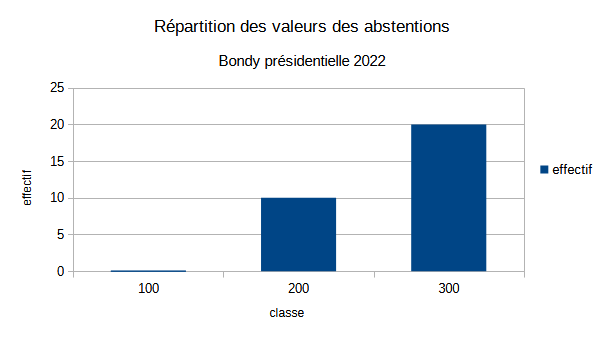
Et non pas :

2.3.1 Préparation de l’exercice
2.3.1.1 Pour obtenir un TIG avec une seule variable, quelle variable choisir et pour quels individus ?
Dans l’exemple proposé du cous, on choisit la colonne de la dénomination des bureaux (1 à 32) et les abstentions à Bondy
Cet exercice permet d’utiliser dans le tableur :
utilisation de la barre d’adresse
formule frequence, formule matricielle (CTRL + MAJ + ENTREE)
formules du tableau

2.3.2 Quel commentaire ?
- étendue
- forme de la distribution
2.4 A explorer
graphique en barres, lignes (lissage)
Observer la disposition des bornes : elles sont utilisées comme des étiquettes et non pas comme une série de valeurs.
2.5 Correction exercice dénombrement des inscrits
Des retours très nombreux.
communes <- c("Annemasse", "Tasson la demi lune", "Clamart", "Epinay-sur-Seine",
"Santes", "Thionville", "Vitry-Sur-Seine", "Massy", "Montpon-Ménestérol", "Choisy-le-Roi", "Malakoff", "Caluire-et-Cuire", "Dieppe",
"Levallois-Perret", "Achères", "Neuily-Sur-Seine", "Nice", "Rueil-Malmaison", "Romainville", "Lagnieu", "Sannois", "Arpajon-sur-Cère",
"Limeil-Brévannes", "Saint-Maur", "Miribel", "Caen", "Ivry-sur-Seine", "Noirmoutier en l'île", "Orsay", "Amiens", "Troyes", "Meung-sur-Loire", "Guipavas", "Auxerre", "Issy-les-Moulineaux", "Saint-Ouen")36 communes pour 55 étudiants.
2.5.1 Commentaires généraux qui valent pour tous les exercices et surtout le DST
2.5.1.1 Pour la forme
Le mieux traitement de texte dans lequel on insère un graphique image.
Attention aux nombreuses pages inutiles si on passe directement du tableur au traitement de texte.
2.5.1.2 Concision du commentaire
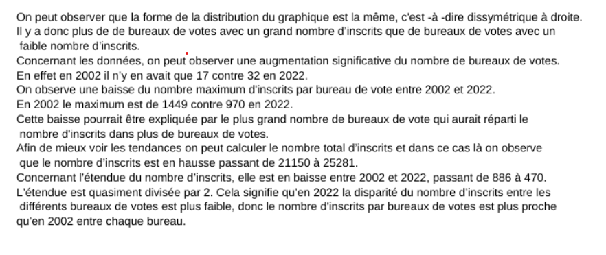
même si, un strict respect de la consigne donnait :
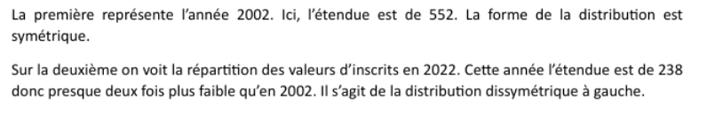
Prochain exercice, commentaire plus court. 2 phrases maximum, aller à l’essentiel.
Il y a plus de petits bureaux de vote que de gros (ou l’inverse)
Ou plus osé :
La ville ne maîtrise pas le nombre d’électeurs par bureaux de vote
Ou plus profond, répondre à la question : quelle est la répartition idéale pour les bureaux de vote ? Est-ce que mon exemple le respecte ?
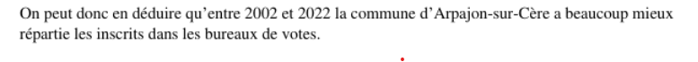
2.5.1.3 Vocabulaire
Revenir sur le terme : formule fréquence et son graphique
Diagramme de fréquence, histogramme…
Le mieux : Discrétisation des bureaux de vote en fonction des inscrits (cf le manuel Béguin Pumain)
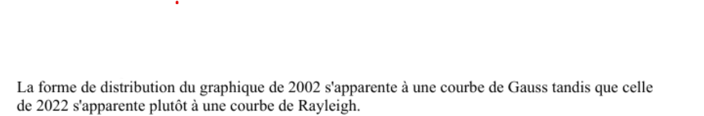

3 Pour raffiner : les indicateurs
Nous avons déjà vu l’amplitude à travers minimum et maximum. Il y en a d’autres. Ils servent à résumer la série statistique
Nous allons montrer comment calculer médiane, moyenne et écart type dans le tableur.
Pour l’exemple, on prend la commune choisie l’abstention (votants / inscrits) puis tous les résultats des candidats dans chaque bureau de vote.
## 'data.frame': 306 obs. of 8 variables:
## $ X : int 974096 974097 974098 974099 974100 974101 974102 974103 974104 974105 ...
## $ ville : chr "Bondy" "Bondy" "Bondy" "Bondy" ...
## $ bv : int 1 1 1 1 1 1 1 1 1 1 ...
## $ inscrits: int 1299 1299 1299 1299 1299 1299 1299 1299 1299 1299 ...
## $ votants : int 868 868 868 868 868 868 868 868 868 868 ...
## $ exprimes: int 850 850 850 850 850 850 850 850 850 850 ...
## $ nom : chr "MEGRET" "LEPAGE" "GLUCKSTEIN" "BAYROU" ...
## $ nb : int 18 18 1 60 143 148 39 8 56 147 ...##
## 1 2 3 4 5 6 7 8 9 10 11 12 13 14 15 16 17
## 18 18 18 18 18 18 18 18 18 18 18 18 18 18 18 18 18# extraction abstention
data <- bondy2002 [bondy2002$nom == "MEGRET",]
png("img/inscrits2002.png")
inscrits <- data$inscrits
hist(inscrits)
dev.off()## png
## 2abs <- round( (data$votants / data$inscrits) *100, 0)
write.csv(abs,"data/abstention2002.csv",
fileEncoding = "UTF-8")Le tableau de 2002 se présente différemment de celui de 2022.
3.1 Calcul : valeurs centrales et dispersion
3.1.1 Valeurs centrales : moyenne et médiane
Il s’agit de caractériser une distribution par son centre.
3.1.1.1 Calcul
Le calcul de la moyenne est connu. Celui de la médiane beaucoup moins.
Sur le tableau complet, créer une colonne rang. Et relever le rang médian
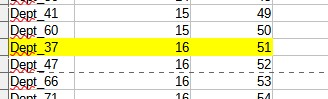
3.1.1.2 Savoir faire tableur
valeur fixe et relative (utilisation du $ et F4)
au niveau graphique, rajout d’un axe par le menu insertion après double clic sur le graphique (onglet positionnement, menu déroulant valeur)
moy <- mean(abs)
med <- median(abs)
hist(abs, main = "Distribution des abstentions")
abline(v = moy, col = 'blue')
abline(v = med, col = 'red')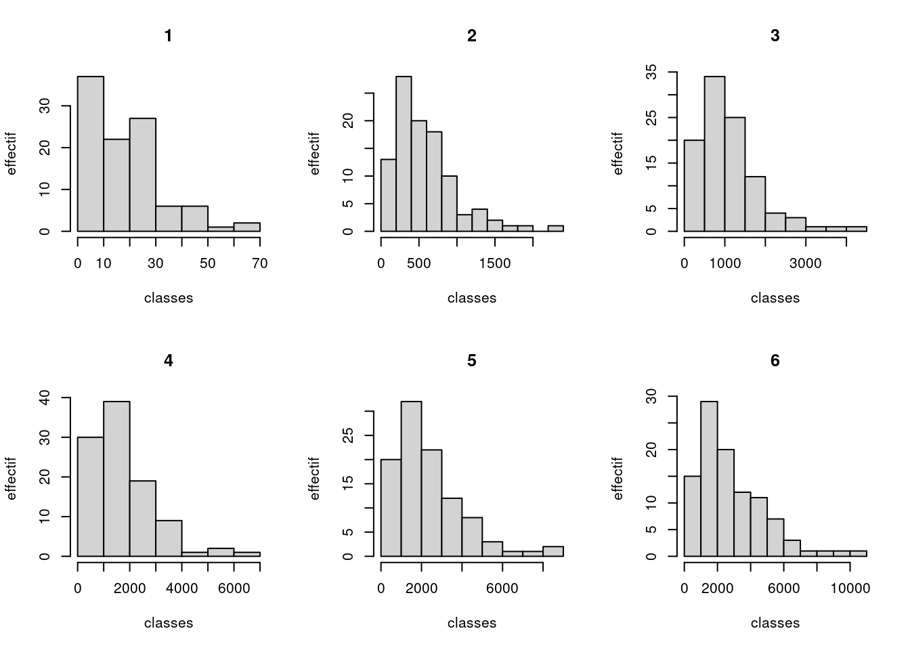
Pour la variable abstention, quelle est l’indicateur le plus utile ?
3.1.1.3 Que retenir ?
3.1.1.3.1 Expliquer ces phrases issues du Chadule
- La médiane est dans une distribution la valeur la plus proche de toutes les autres
Il s’agit d’une propriété mathématique de la médiane.
- les valeurs extrêmes décentrent la moyenne
3.1.1.3.2 Rapport entre médiane et moyenne
Que peut-on dire de la forme de la distribution
si la moyenne est égale à la médiane ?
si moyenne > médiane
si médiane > moyenne
candidat <- unique(bondy2002$nom)
png("img/medmoy.png")
par(mfrow=c(4,4))
for (i in 1:length(candidat)){
tmp <- bondy2002 [bondy2002$nom == candidat [i],]
moy <- mean(tmp$nb)
med <- median(tmp$nb)
hist(tmp$nb, main = candidat [i])
abline(v = moy, col = 'blue')
abline(v = med, col = 'red')
}
dev.off()## png
## 2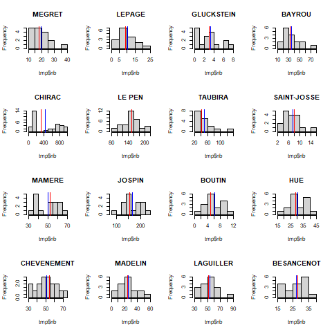
Chercher à caractériser les voix pour les différents candidats en fonction de la médiane / moyenne
3.1.2 Dispersion : Ecart-type et variance
La distribution est-elle hétérogène ?
png("img/ecartType.png")
par(mfrow=c(4,4))
for (i in 1:length(candidat)){
tmp <- bondy2002 [bondy2002$nom == candidat [i],]
sigma <- sd(tmp$nb)
med <- median(tmp$nb)
hist(tmp$nb, main = paste0(candidat [i], " ", round(sigma,0)))
}
dev.off()## png
## 2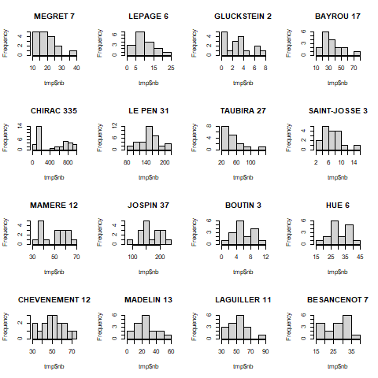 Commenter l’écart type le plus élevé
3.1.2.1 2 définitions :
écart moyen des valeurs à leur moyenne arithmétique
moyenne du carré des écarts
3.1.2.2 Une question fondamentale : pourquoi utiliser les carrés ?
et notamment, pour l’oeil du géographe :
Une façon de penser à cela est que l’écart-type est similaire à une “distance par rapport à la moyenne”.
Comparez cela à des distances dans un espace euclidien - ceci vous donne la vraie distance, où ce que vous avez suggéré (qui, en fait, est la déviation absolue ) ressemble plus à un calcul de distance manhattan .
3.1.3 Utilisation du tableur
Toujours sans passer par les formules, mais avec un tableau pas à pas, créer les indicateurs.
liste des colonnes :
écart à la moyenne
carré des écarts
et à part sur une seule case : moyenne du carré des écarts (variance), l’écart type est la racine carrée.
3.1.4 Corrections quelques remarques
L’objectif de l’exercice était d’obtenir un commentaire clair avec quelques repères statistiques.

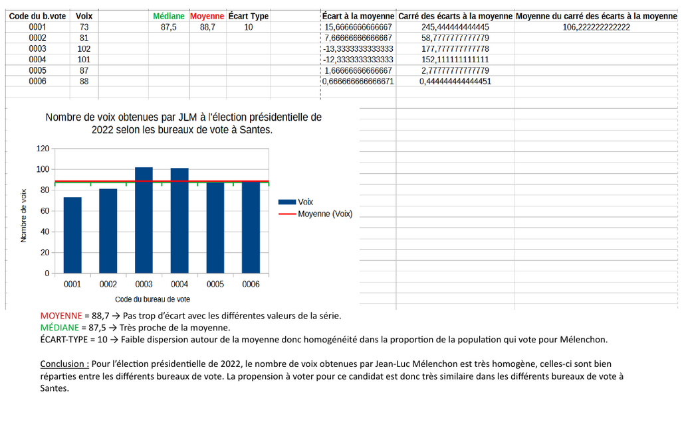
3.1.4.0.1 Quelles erreurs ?
3.1.4.0.2 Facile à évaluer
- Mise en forme : zéro
Pas d’export direct de vos tableaux excel, svp !
étudiants exportant leur .pdf en entier 5
1 page suffit, quelques lignes de commentaire pas technique
A l’inverse, penser quand même à mettre ville, année, et candidat
- Pas de respect de la consigne : zéro
exemple : variable des inscrits, graphique de la fréquence.
- Le plus original :
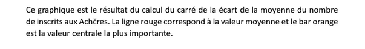
Pourquoi prendre le carré des moyennes ?
- le plus incompréhensible :
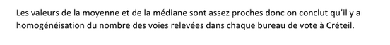
- attention aux commentaires trop techniques
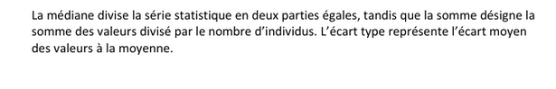
3.1.4.0.3 Non pris en compte
Affichage de la médiane : ce n’est pas très facile sous le tableur.
graphique du TIG et forme de la distribution
Attention, le graphique du TIG ne permet pas de voir la forme de la distribution.
Du coup, sans doute beaucoup d’étudiants n’ont pas osé parler de symétrie / dissymétrie.
Le candidat a un petit nombre de votes dans beaucoup de bureaux, les valeurs faibles tirent la moyenne vers le bas, moyenne < médiane (cas Taubira) Le candidat a un grand nombre de votes dans beaucoup de bureaux, les valeurs fortes tirent la moyenne vers le haut, moyenne > médiane (cas Chevènement)
Dans les 2 cas, on analyse la médiane, c’est elle qui est la valeur centrale la plus représentative.
3.1.4.0.4 Erreurs intéressantes par rapport à l’écart type
Sauf cas extrême, L’écart type ne peut pas avoir le même ordre de grandeur que la moyenne / médiane.
Attention, ce n’est pas parce que médiane et moyenne se confondent que l’écart type est petit…
La taille de l’écart type est à rapporter à l’indicateur central pour qualifier son importance.
ex : écart type 25 sur une moyenne / médiane autour de 100
L5GEABIM Analyses bivariées et multivariées